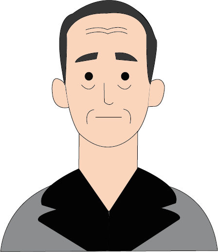

Marcel Duchamp


Nascita:
28 Luglio 1887, Blainville-Crevon, Francia
Morte:
2 Ottobre 1968, Neuilly-sur-Seine, Francia
Corrente:
Dadaismo



Opere più famose: Ruota di bicicletta 1913; Fontana 1917
Curiosità: L’artista era entrato a far parte della “Society of Independent Artist” che aveva organizzato una fiera in cui qualsiasi artista poteva esporre liberamente. Duchamp, che era anche nel comitato scientifico, inviò l’orinatoio segretamente, con lo pseudonimo di Richard Mutt. Nonostante il regolamento non prevedesse il rifiuto dell’opera, la sua “Fontana”, di cui ovviamente si ignorava la reale paternità, non fu esposta perché considerata non arte. In segno di protesta Duchamp si dimise dalla società.
Citazione: "Il grande nemico dell’arte è il buon gusto.”